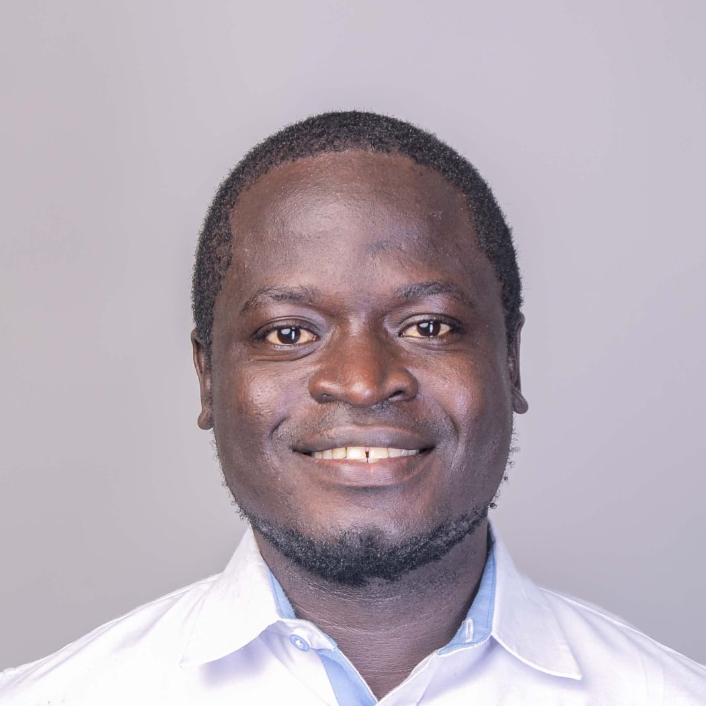

"My mother left for work before sunrise every day and still fell further behind — not because she lacked effort, but because no one had ever taught her mathematics. That observation became a conviction, and that conviction became a career."
That conviction shapes how I manage programmes. I start from what each learner can actually do, build delivery that field teams can run to the same standard without me in the room, and answer for the budget and the safeguarding standards along the way.
David Oduor Ochanda
Inclusive education and community development
Currently Program Manager at ChallengeAid Africa and at Smiley Charity (Education in a Suitcase). Five-plus years designing data-driven, community-rooted programmes for underserved and refugee youth across Kenya, Tanzania and Uganda, including Kakuma and Kalobeyei.

I take education programmes from design to measured results
Across Kenya, Tanzania and Uganda, I plan, deliver, monitor and report on programmes for underserved and refugee learners.
I am an education and community development professional with five-plus years of experience managing multi-site programmes. My sites range from digitised community libraries across Kenya, Tanzania and Uganda to classrooms in Kajiado, Mombasa, the Mt. Kenya region and Arusha, and refugee-camp programming in Kakuma and Kalobeyei.
My work sits where programme management, monitoring and evaluation, and EdTech meet. I translate donor requirements and community needs into delivery plans that field teams can run, and turn field data into decisions that leadership can act on.
- Manage multi-site education programmes reaching 3,500+ learners, including 11 refugee-camp sites across the Kakuma complex and Kalobeyei settlement.
- Fund. Wrote the proposal that secured $5,000+ (KES 650,000) from the Desai Memorial Foundation, with transparent budget tracking and stakeholder alignment.
- Digitise community libraries and bring EdTech into 30+ sites in Kenya, Tanzania and Uganda through participatory community workshops.
- Safeguard. Implemented child-protection protocols with 100% compliance across partnering communities and refugee sites.
- Measure results with UWEZO assessments and real-time progress monitoring, and use the data to correct course.
Delivery, data, money and safeguarding, each tied to a result
The skills a programme manager is hired for, the tools behind each, and where they show up in the work.
Three programmes, three different problems solved
Each case study opens with the result, then walks through the situation, my task, my actions, the outcome and what I learned.
SmileyTutor Multi-Site EdTech & Refugee-Camp Digitisation Rollout
21% improvement in math proficiency, including refugee cohorts. Led programming across 11 sites in Kakuma and Kalobeyei and 30+ digitised libraries.
Kajiado Women Empowerment & Schools of Hope Initiative
60%+ of participants advanced a literacy or numeracy level. A Training-of-Trainers model reaching 1,650+ women and 200+ men.
YouthRise ChangeMakers: From a Community Library to a Community-Based Organisation
500+ children reached over 5+ years. Co-founded and direct the organisation, now with 3 institutional partners.
Each figure is that programme's own count, drawn to a common scale. The counts are not cumulative because some sites overlap across programmes.
"The strongest programmes aren't the ones with the most sites on a map — they're the ones where a facilitator in Kajiado can run a session the same way, to the same standard, whether or not I'm in the room that day." David Oduor Ochanda, on why the Training-of-Trainers model sits at the centre of this work
What the people who worked with me say
Four of seven are shown here. The full set, including peers from an international leadership cohort, is on the Recommendations page.
Sophia Kamwaweru
Director, ChallengeAid Africa
David's dedication to inclusive education and stakeholder engagement is exemplary. His management of multi-site EdTech initiatives, community library digitizations, refugee-camp programming in Kakuma and Kalobeyei, and adherence to rigorous safeguarding standards have transformed learning outcomes for thousands of vulnerable youth.
Judy Wanja
Accountant, ChallengeAid Africa
He's thorough in tracking program spend, quick to flag discrepancies, and always professional in how he communicates with our finance team. It's genuinely refreshing to work with a program lead who takes financial accountability as seriously as program impact.
Fatuma Mola Abdi
Community development practitioner, ChallengeAid Africa
He's someone who follows through, communicates clearly, and genuinely wants the team to succeed. I'd gladly work with David on any project again.
Bayard Nguerekoutou
Education Changemakers Cohort 2 peer
David brings a grounded, practical perspective shaped by years of real community work in Kajiado, and he was brilliant and never afraid to push our group's thinking further or ask the harder question.
Let's talk about your next programme.
I'm open to Programme and Project Manager roles in inclusive education, community development and refugee-camp programming, in Kenya, across East Africa, or with remote-first international teams.
- Emailochandadavid2000@gmail.com
- Phone+254 795 063 917
- LinkedIndavidoduorochanda
- LocationNairobi, Kenya